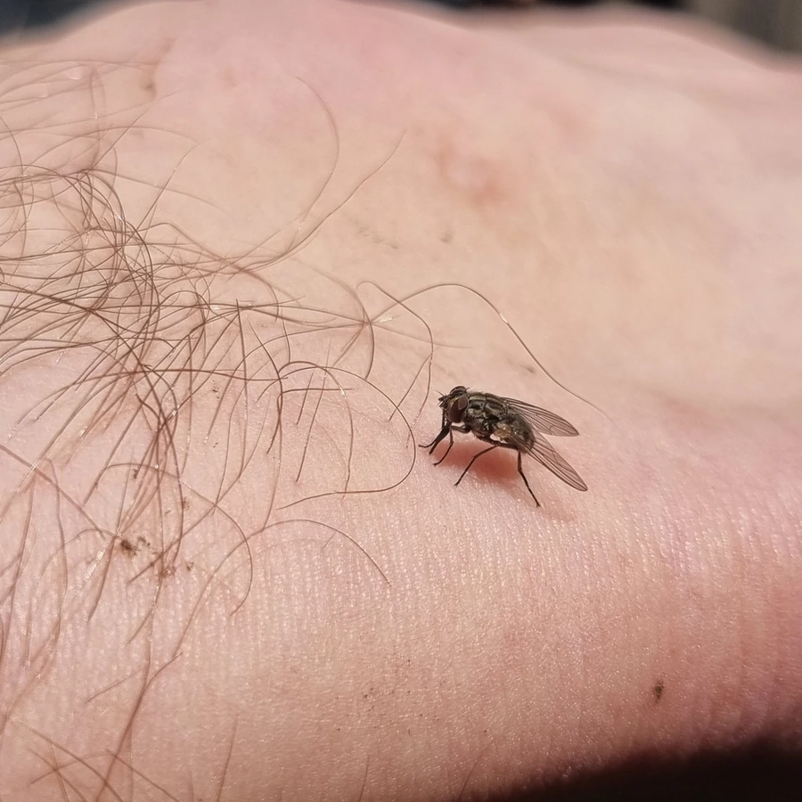

昆虫 · 动物界
厩螫蝇 Stomoxys calcitrans

口器坚硬如针、雌雄都吸血的双翅目蝇类，常在畜舍周围叮咬牛马，可传播炭疽和锥虫病。
- 分类
- 门节肢动物门纲昆虫纲目双翅目科蝇科属螫蝇属
- 栖息环境
- 畜舍、牧场、马厩与湿粪草堆附近
- 地理分布
- 世界各地，中国各地牧场和畜舍均有
- 保护级别
- 常见畜牧害虫，无保护需求
物种志
厩螫蝇的成虫体长约六至七毫米，形似家蝇，但口器坚硬细长，像一根能刺穿皮肤的小针，停歇时也常把口器向前伸出。胸背灰黑并有暗色纵纹，腹部有圆形黑斑，翅透明。它与家蝇最大的区别是雌雄都吸血，白天活动，尤其喜在牛马的腿部、腹下和耳根处叮咬，被叮的牲畜会抬腿甩尾、烦躁不安。
它分布于世界各地，中国各地畜舍和牧场均有，幼虫在湿粪、草堆和腐败饲料中孳生。成虫吸血时反复起落，一头牛身上可同时停着几十只，叮咬不仅造成失血和应激，降低增重与产奶量，还能机械传播炭疽、锥虫病和马的传染性贫血。它以蛹或成虫越冬，一年发生多代。防治关键在于及时清理湿粪和草料残渣，切断幼虫的孳生环境。
形态与习性
- 体长约六至七毫米，形似家蝇
- 口器坚硬细长如针，可刺穿皮肤
- 吸血雌雄均吸血，白天活动
- 孳生湿粪、草堆与腐败饲料
- 传播炭疽、锥虫病、马传染性贫血
- 防治清理湿粪草料，畜体喷药
趣味知识
- 它停在你手上时会把头前那根针伸出来，家蝇的口器是海绵状的，舔而不能刺。
- 雌雄都吸血，这在家蝇科里并不常见，因此它的骚扰远超普通苍蝇。
- 一头牛身上同时落下几十只螫蝇时，产奶量会明显下降。